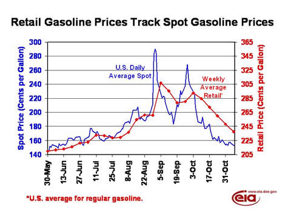

EIA Home > Petroleum > This Week In Petroleum
|
|
This Week In Petroleum EIA Home > Petroleum > This Week In Petroleum |
Released on November 9, 2005
(Next Release on November 16, 2005)
Retail Gasoline Prices Generally Follow Spot Price Changes
While retail gasoline prices reached record levels in nominal terms and came close to record
levels after adjusting for inflation following Hurricane Katrina, they have dropped precipitously
over the last five weeks. Although retail gasoline prices remain significantly higher than
year-ago levels, they have tracked spot prices this summer and fall in a manner consistent
with previous price run-ups. This relationship can be quantified to the point where we can
predict fairly accurately how retail prices will behave given spot prices. This analysis shows
that it takes about a week for retail prices to begin to reflect changes to spot prices, and
that it takes several weeks before retail prices fully reflect changes in spot prices.
This lag explains why retail prices sometimes continue to move higher after spot prices have
begun to drop. We also know that, given taxes and expected retail margins, retail prices
generally average about 65 cents higher than spot prices, once the full effect of spot price
changes are passed through. In the chart below, the right axis, which is used for retail
prices, has been shifted up by 65 cents per gallon. Thus, we would expect to see both lines
close together, with the retail line (red) lagging slightly behind the spot price line (blue).
We can see that prior to Hurricane Katrina, which hit at the end of August, though retail
prices were rising, they were lagging the increase in spot prices, particularly in the month
of August. But, of course, most of the interest in gasoline prices has centered on what
happened after the hurricanes affected petroleum infrastructure.

When Hurricane Katrina entered the Gulf of Mexico and made landfall in Louisiana, it dramatically reduced crude oil production and initially shut down over 2 million barrels of refinery capacity. But, perhaps, the most severe damage it did with respect to gasoline markets was the shutdown, due to power outages, of some major product pipelines that transport gasoline from the Gulf Coast to the East Coast. This caused spot gasoline prices to spike dramatically, and although retail gasoline prices rose by a record amount between August 29 and September 5, it was still much less than spot prices jumped. This phenomenon repeated itself to a lesser extent after Hurricane Rita made landfall, and, combined with refinery outages still existing following Hurricane Katrina, nearly 5 million barrels per day of refinery capacity was shut down. However, as refineries gradually came back on line and domestic gasoline production began to increase, and gasoline imports hit record levels in three successive weeks at the end of September and early October, the gasoline supply situation improved enough to cause spot prices to fall to below pre-hurricane levels, and retail prices have followed suit. While retail prices have not dropped quite as much as spot prices in recent weeks, we would expect retail prices to continue to fall even if spot prices begin to flatten out, so that within a few weeks, both lines in the chart above would be close together once again. This helps explain why EIA’s short-term forecast, released yesterday, expects retail prices to continue to drop over the next month or two, absent any sudden upward movement in spot prices.
Residential Heating Fuel Prices Show Decreases Across the Board
Residential heating oil prices decreased again for the period ending November 7, 2005. The
average residential heating oil price dropped 6.9 cents from last week to reach 250.8 cents
per gallon, an increase of 48.0 cents from this time last year. Wholesale heating oil prices
decreased 8.4 cents to reach 185.3 cents per gallon, an increase of 44.9 cents compared to the
same period last year.
The average residential propane price decreased 0.7 cent, to 195.5 cents per gallon. This was an increase of 26.5 cents over the 169.0 cents per gallon average for this same time last year. Wholesale propane prices decreased 6.6 cents per gallon, from 119.1 cents to 112.5 cents per gallon. This was an increase of 14.2 cents from the November 8, 2004 price of 98.3 cents per gallon.
U.S. Retail Gasoline and On-Highway Diesel Prices Continue to Drop
The U.S. average retail price for regular gasoline dropped by 10.4 cents to 237.6 cents per gallon, falling for the fifth week in a row. Over the past five weeks, retail prices have dropped a total of 55.2 cents per gallon. Nevertheless, this week’s price is 37.5 cents higher than this time last year. Prices were down throughout the country, with the Rocky Mountain region seeing the largest regional decrease of 12.2 cents to 246.4 cents per gallon. The Midwest had the lowest regional price in the country, falling 9.5 cents to 223.1 cents per gallon. East Coast prices fell by 10.9 cents to 239.6 cents per gallon. The West Coast averaged 262.3 cents per gallon, the highest regional average price in the country, after falling 8.9 cents; California prices lost 8.8 cents to 265.9 cents per gallon.
Retail diesel fuel prices tumbled 17.8 cents to reach 269.8 cents per gallon, the lowest price since August 29, 2005. Over the last two weeks, the U.S. average retail diesel price has plummeted 45.9 cents per gallon, the largest two-week decline on record. Prices were down throughout the country last week, with the Midwest seeing the largest regional decrease of 23.6 cents to 267.1 cents per gallon. The highest regional average price in the country was in the Rocky Mountain region, falling 17.2 cents to average 290.7 cents per gallon. East Coast prices were down 12.7 cents to 265.7 cents per gallon, the lowest regional price in the nation. West Coast prices averaged 282.1 cents per gallon, a decrease of 13.0 cents.
Propane Inventories Top 70 Million Barrels
U.S. inventories of propane continued to build, with a 1.0-million-barrel gain that positioned the nation’s primary supply of propane at an estimated 70.4 million barrels as of November 4, 2005. The weekly build pushed inventories to their highest level in nearly four years, just slightly below the level reached on December 7, 2001, that totaled nearly 70.8 million barrels. However, regional inventory activity was mixed last week, with East Coast and Midwest inventories posting declines of 0.1 million barrels and 0.2 million barrels, respectively. But the largest gains were reported in the combined Rocky Mountain/West Coast regions that shot higher by 0.5 million barrels, while the Gulf Coast posted a strong 0.7-million-barrel gain during this same time. The combination of the recovery in propane production facilities that continued to report higher production, strong imports, moderate weather and weak crop-drying demand all contributed to the post season gains in propane inventories over the past several weeks. Propylene non-fuel use inventories remained unchanged last week at 3.8 million barrels, posting a slightly smaller 5.4 percent share of total propane/propylene inventories compared with the prior week’s 5.5 percent share.
Text from the previous editions of “This Week In Petroleum” is now accessible through a link at the top right-hand corner of this page.
|
|
||||||||||||||||||||||||||||||||||||||||||||||||||||||||||||||||
|
||||||||||||||||||||||||||||||||||||||||||||||||||||||||||||||||
|
||||||||||||||||||||||||||||||||||||||||||||||||||||||||||||||||
|
||||||||||||||||||||||||||||||||||||||||||||||||||||||||||||||||
|
|